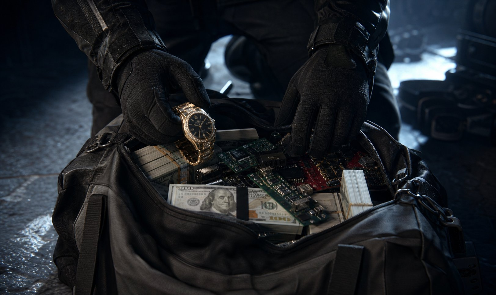

1. Comprendre les bases en 2 minutes
Arena Breakout Infinite est un extraction shooter : vous entrez sur la carte avec votre équipement, vous looter, et vous devez atteindre un point d'extraction avant la fin du chronomètre. Mourir = perdre ce que vous portez (hors conteneur sécurisé). L'objectif n'est pas de tuer le plus de monde, mais de sortir vivant et plus riche.
Nouveauté Saison 7 (16 septembre 2026)
Les caps d'équipement ont changé : Normal = T4 maximum, Lockdown = T5 maximum. La RNG de pénétration des munitions T5/T6 a été supprimée et les dégâts de headshot ont été renforcés. Vos premières heures de jeu doivent intégrer ces nouvelles règles.
2. Votre premier raid : la route de Farm
Farm reste la meilleure carte d'apprentissage : vaste, lisible, avec 14 extractions. La route de spawn Ouest est la référence des débutants :
- Grain Trade Center — registres et étagères, butin rapide, faible exposition.
- Étables — montez à l'étage : coffre de spawn fréquent, excellente couverture.
- Motel — jusqu'à 3 coffres verrouillés et plusieurs boîtes d'armes. N'y restez pas trop longtemps.
- Extraction Outpost ou Boulder Wall — sorties fiables et peu contestées.
Règle d'or
Ouvrez votre carte avec M dès le spawn. Les extracteurs verts sont libres ; les extracteurs rouges exigent une condition (paiement, sans sac, timing, dogtags). Repérez les vôtres avant de tirer le premier coup.
3. Le loadout de départ (Rat Kit < 20 000 K)
La règle fondamentale : ne jamais investir plus de 20–30 % de votre bankroll dans un kit. Si vous avez 100 000 K, votre kit ne doit pas dépasser 20–30 000 K.
| Slot | Choix budget | Coût indicatif |
|---|---|---|
| Arme principale | TT ou Makarov PM, ou SKS/AKM en Workhorse | 5–30 000 K |
| Munitions | PS / LP (Tier 2-3), minimum 60 tirs | 1–8 000 K |
| Armure | PACA (T2) ou rien | 0–5 000 K |
| Casque | Aucun ou cagoule basique | 0 K |
| Médical | 2 bandages, 1 analgésique, 1 garrot | 2–4 000 K |
La leçon des munitions
« L'armure ne tue pas, les mauvaises munitions si. » Un fusil pas cher avec des munitions Tier 3-4 battra toujours un fusil moddé à 200 000 K tirant du Tier 1. Investissez d'abord dans la pénétration, ensuite dans le gun porn.
4. Survivre : règles de combat
- Pré-médication : un analgésique avant le combat maintient votre vitesse de déplacement, même touché aux jambes.
- Validez les 5 000 K/slot : ne ramassez que du loot rentable. En dessous, c'est du poids mort.
- 15–20 minutes par raid : au-delà, vous êtes perdu ou trop gourmand.
- Objectif survie solo > 30 % : c'est le seuil de rentabilité du joueur moyen, pas un chiffre de gloire.
- 3x la valeur du kit : votre butin extrait doit valoir ~3× le coût de votre kit. Sinon vous jouez monotone.
- Ne looter pas sur le corps à nu : regardez les angles 30 secondes. Les coéquipiers du défunt surveillent le cadavre.
5. Les 7 erreurs qui ruinent votre stash
- Sur-équipement en Normal : un kit Forbidden en lobby Normal, c'est brûler de l'argent.
- Ignorer la pénétration : du Tier 2 contre du Tier 4, c'est littéralement 0 dégât corporel.
- Greed-loot : un conteneur de plus pendant que la sirène approche = mort quasi certaine.
- Tirer le premier : le bruit attire les tiers-partis. Un tir isolé = trois zones sur vous.
- Vendre au Field Merchant : en S7, un marchand par raid ouvre à T+5 min ; vendre libère des cases et construit la faveur qui débloque l'intel — optimisez vos ventes en raid.
- Ignorer les missions : c'est la seule source fiable de rep, d'argent et de déblocages.
- Ne pas vider le chargeur avant de vendre : une arme vendue avec ses munitions, c'est du Koen offert.
Trois réglages à faire avant votre premier raid
Le client mal réglé transforme un bon opérateur en cible. Trois manipulations, dix minutes : activez le Focal Point (onglet Game) et calibrez son décalage au Stand de tir, réglez la sensibilité par grossissement (Control → Global Control Settings) en restant sur une valeur basse et fixe, et désactivez le double-clic pour déplacer un objet — c'est la manière la plus sûre de perdre une pile de munitions. Le détail et le preset complet sont dans Réglages & sensibilité.
6. FAQ express
Quel niveau pour débloquer les modes ?
Niveau 8 : Zombie Endless (Airport, PvE). Niveau 12 : Lockdown. Niveau 30 : Forbidden. Les missions de faction vous y amènent naturellement.
Puis-je garder ce que je trouve si je meurs ?
Oui et non : seul le conteneur sécurisé et les dogtags survivent à la mort. Tout le reste est perdu — d'où l'intérêt de n'investir que ce que vous pouvez perdre.
Mon premier achat important ?
Un bon headset (casque audio). Entendre l'ennemi avant de le voir gagne la moitié des duels. Voir notre guide des casques audio.
Je suis bloqué à 0 Koen, que faire ?
Rat kit + routes Farm + ventes Market hebdomadaires. Notre guide économie détaille le plan complet, du rat kit aux 10M de stash.
Prochaine étape
Une fois vos 10 premiers raids gagnés : passez au Guide avancé (mouvement, angles, médical sous le feu) et lisez notre guide Extraction pour transformer vos loots en fortune.